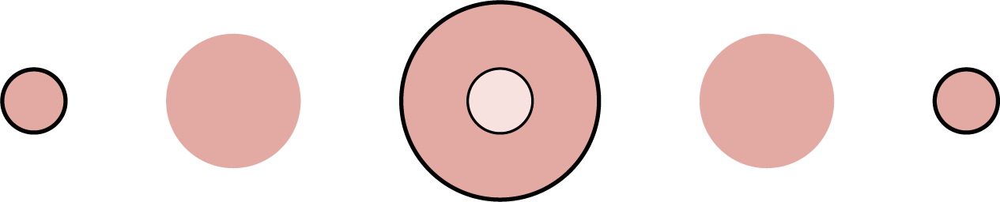

Projekte
Creative Studio
Video- & Fotografie
14.08.2023 - 31.01.2024
Shop Winterthur
Verkauf & Backoffice
01.02.2024 - 30.06.2024
»Freude am Job bringt Perfektion in die Arbeit.«
Aristoteles
Genau diese Freude bringe ich in meine Lehre mit, denn ich finde die Ausbildung als Mediamatikerin grossartig. Ich möchte alles lernen, was dieser Beruf mit sich bringt. Ob illustrieren, animieren, fotografieren, filmen oder programmieren. Durch meine Freude am Beruf gebe ich bei jedem Auftrag mein Bestes, um ein gutes Werk hervorzubringen. Dabei helfen mir mein Auge für Details und meine Fähigkeit autodidaktisch zu lernen.
Hoi, schön, dass du den Weg auf meine Webseite gefunden hast.
Ich bin 17 Jahre alt und momentan im 1. Lehrjahr als Mediamatikerin.
Eigenschaften die ich mitbringe:
- Ehrgeiz
- Wissbegierigkeit
- Ausdauer
- Kooperationsfähigkeit
- Zuverlässigkeit
-> Lebenslauf